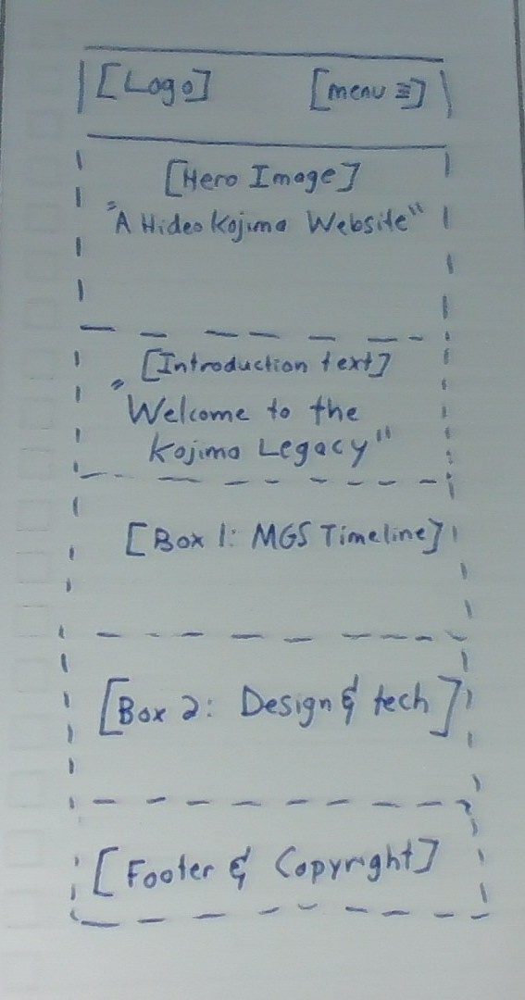
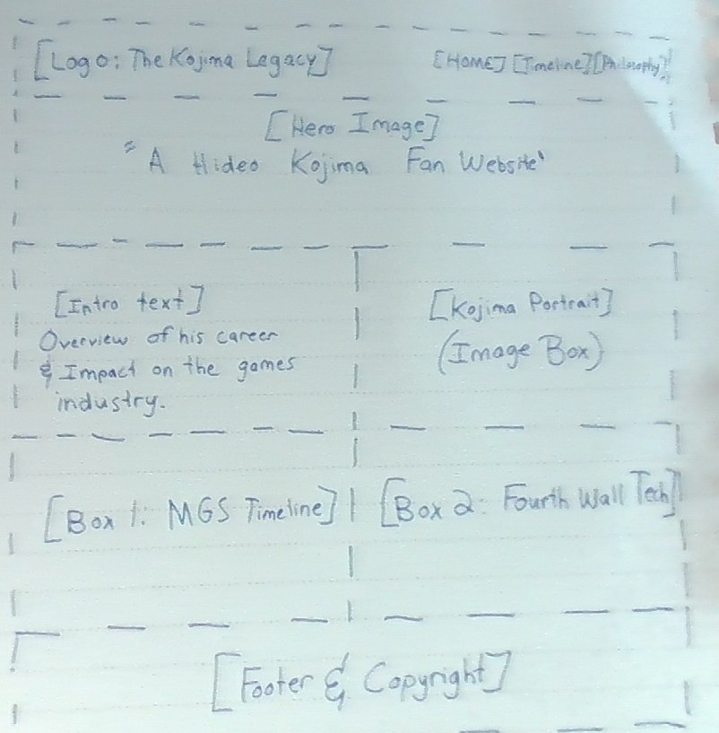

Site Name
The Kojima Legacy
Reason: To showcase the legacy and contributions of Hideo Kojima in the video game industry.
Site Purpose
The purpose of this site is to provide information about Hideo Kojima's career, his games, and his impact on the gaming world.
Scenarios
- What was the chronological release order of the Metal Gear Solid games, and which ones did Kojima actually direct?
- What are some examples of how Kojima breaks the fourth wall or tricks the player in his games?
Color Scheme
The "Tactical Espionage" Palette:
- Background: Stealth Black (#111111)
- Body Text: Codec Green (#4CAF50)
- Headings and Accents: Alert Red (#E53935)
Typography
- Headings: 'Share Tech Mono' - Used to mimic computer terminal readouts and class Metal Gear Solid UI.
- Body Text: 'Roboto' - A clean font used for easily readable paragraphs.
Wireframes
Below are my personal sketches of the site layout for mobile and desktop views.

